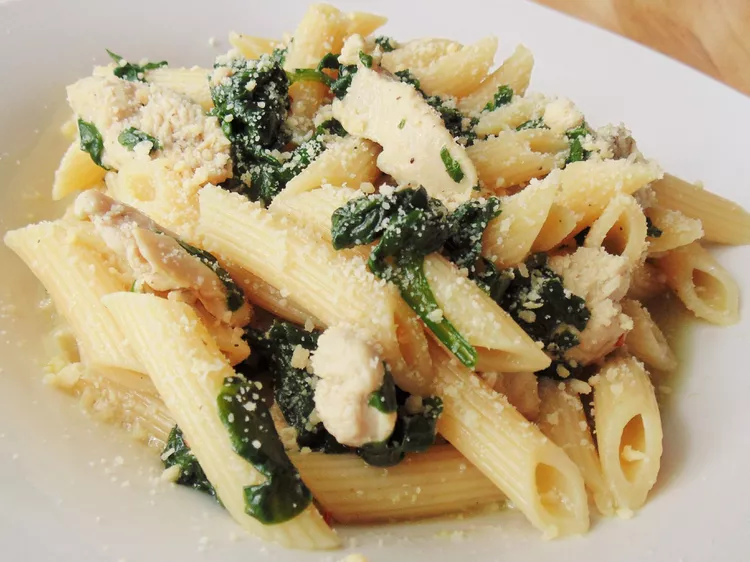

Pasta Recipe

Penne Chicken-Spinach
Today we have a recipe for all people that are bored of plain pasta.
Try this out if you want to eat nice variation that is not too alienating.
Ingredients
- 500g Penne
- 300g Chicken
- 100g Spinach
- 50g Parmesan
- Start out by boiling the Penne till they are medium cooked
- While the Penne are almost finished start cooking the chicken soon followed after by the Spinach
- When the chicken starts to get a golden-brown-color mix the penne with the chicken and spinach
- After serving add Parmisan to your liking
ENJOY!!